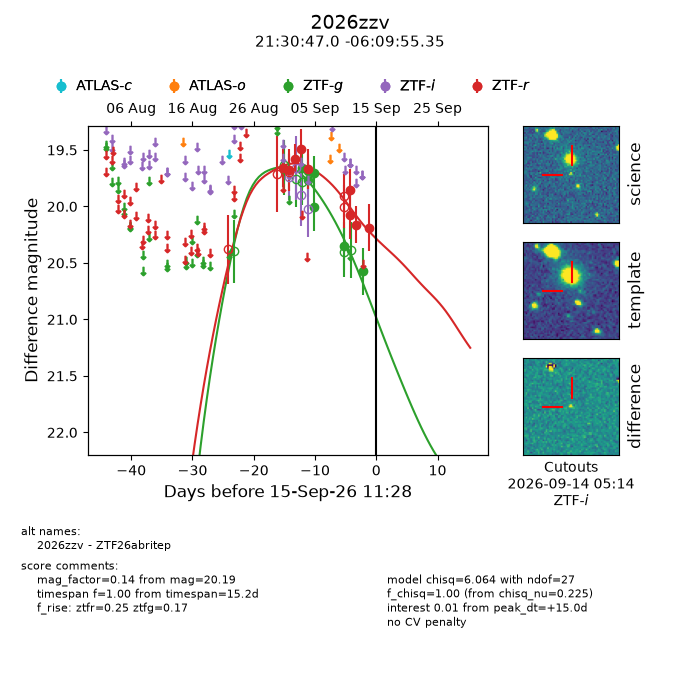
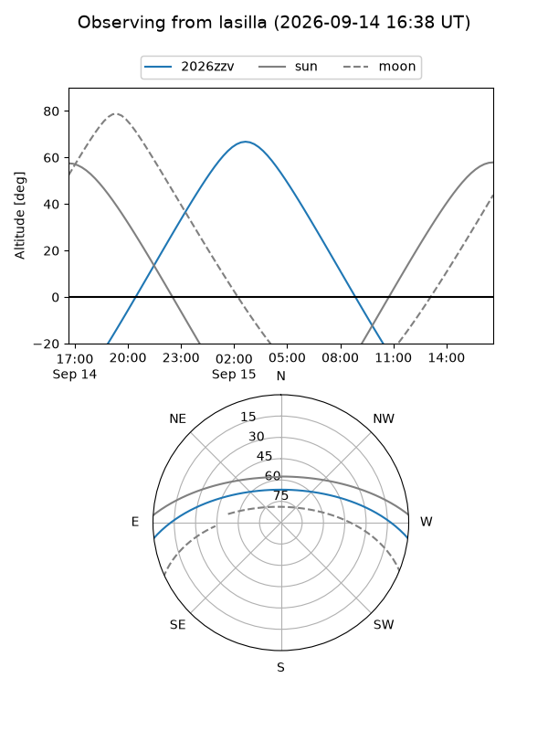
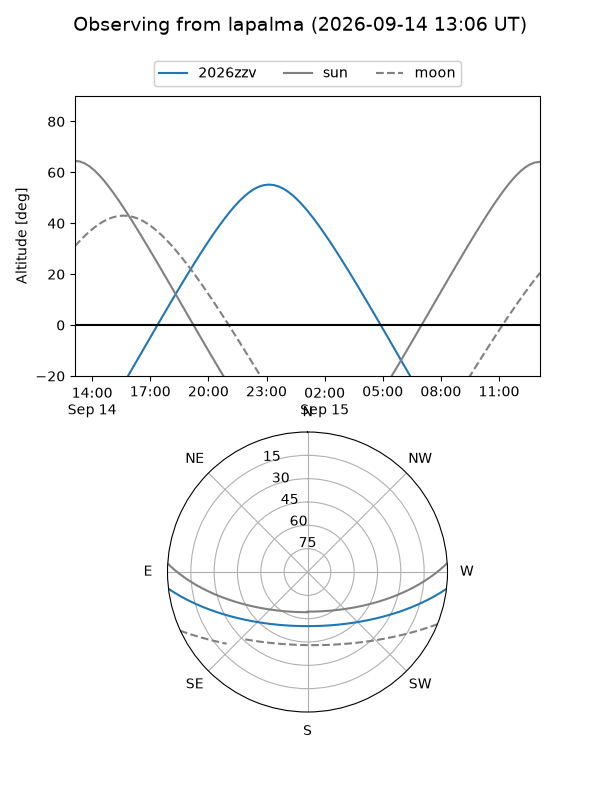
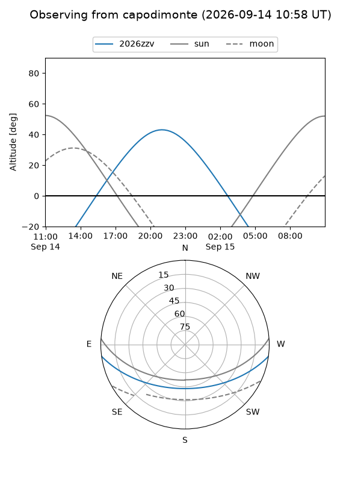
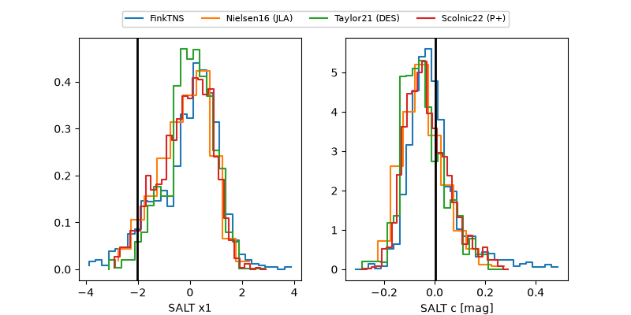

2026zzv
Target 2026zzv at 2026-09-15 11:30
Aliases and brokers:
FINK-ZTF: ztf.fink-portal.org/ZTF26abritep
Lasair-ZTF: lasair-ztf.lsst.ac.uk/objects/ZTF26abritep
ALeRCE-ZTF: alerce.online/object/ZTF26abritep
YSE-PZ: ziggy.ucolick.org/yse/transient_detail/2026zzv
TNS name: wis-tns.org/object/2026zzv
Direct TNS query: direct search
alt names
ZTF26abritep (ztf,fink_ztf)
2026zzv (tns,yse)
Coordinates:
equatorial (ra, dec) = 322.6959,-6.16538
equatorial (HMS+DMS) = 21:30:47.02,-06:09:55.35
galactic (l, b) = (47.2483,-38.01002)
Flags:
TNS type: nan
peak dt: +15.0
Photometry:
last ztfg=20.58, ztfr=20.19
7 ztfg, 9 ztfr detections
Lightcurve

Visibility



Additional plots
